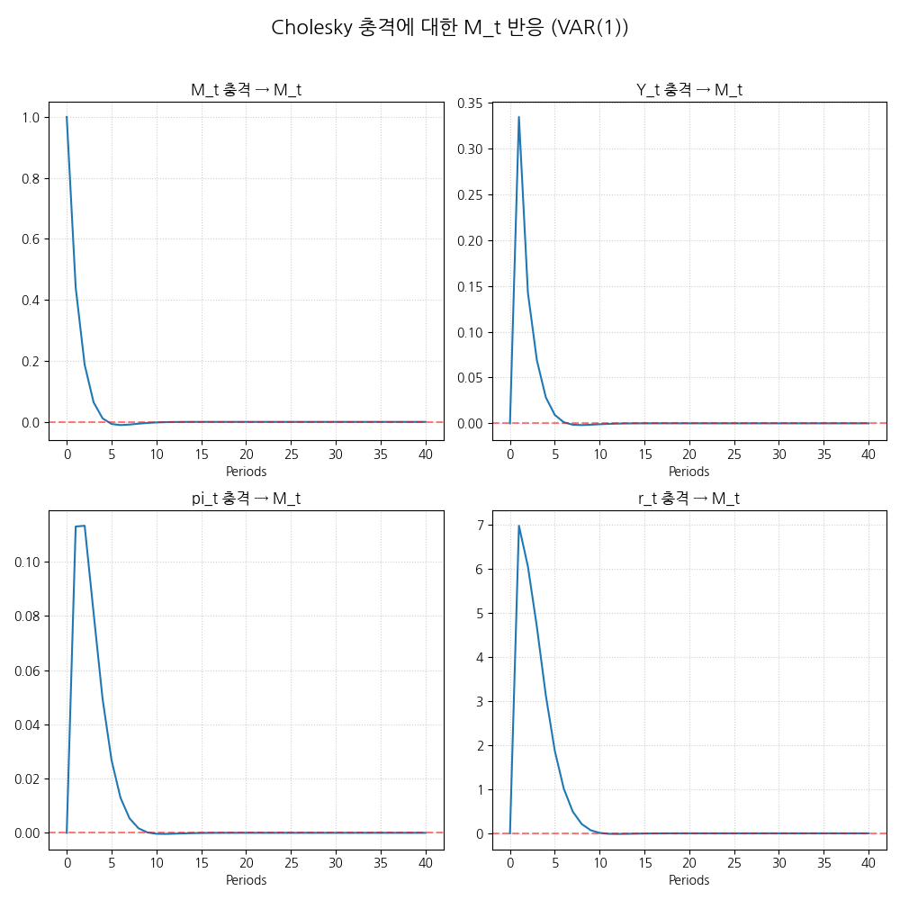

💰 Cholesky VAR 분석 리포트 (4-변수, Lag 1)
2025-11-18_VAR 분석 결과
🎯 예측 보고서
## 🎯 다음 분기 통화량($M_t$) 예측 보고서📈 통화량 예측 결과
Metric Value 95% CI (Lower) 95% CI (Upper) 예측 변동률 **1.34%** 1.34% 4.32% **해석:** 모형은 통화량이 다음 분기에 **1.34%** 변동할 것으로 예상하며, 95% 확률로 변동 폭은 1.34%에서 4.32% 사이에 위치합니다.
🗓️ 최근 20개 분기 ($M_t$) 변동률
(VAR 모형 추정에 사용된 최종 변동률 데이터)
Date M_t Change (%) 2020-12-31 2.86% 2021-03-31 3.31% 2021-06-30 3.81% 2021-09-30 2.19% 2021-12-31 2.39% 2022-03-31 1.65% 2022-06-30 0.14% 2022-09-30 -0.48% 2022-12-31 -1.19% 2023-03-31 -1.16% 2023-06-30 -1.52% 2023-09-30 -0.12% 2023-12-31 -0.25% 2024-03-31 0.72% 2024-06-30 0.70% 2024-09-30 0.86% 2024-12-31 0.98% 2025-03-31 0.86% 2025-06-30 1.30% 2025-09-30 1.23% 📊 분산 분해 (Cholesky FEVD) 요약 (1분기 후)
✅ Cholesky 분해 기반 분산 기여도 계산 완료. (외부 충격 0%는 $M_t$ 우선 순위 가정에 따른 1분기 예상 결과입니다.)
(주요 **Cholesky 충격**이 $M_t$의 예측 오차 분산에 기여하는 정도)
Rank Structural Shock Contribution to $M_t$ Variance (1Q) 1 **Shock: Y_t** 0.00% 2 **Shock: pi_t** 0.00% 3 **Shock: r_t** 0.00% 🛡️ 모형 신뢰도 지표 및 예측 성능 분석
- **모델 유형:** Cholesky 분해 VAR
- **적용된 차수:** 1차
- **$M_t$ 방정식 설명력 ($\mathbf{R^2}$):** 0.2442
📝 예측 개요
- **분석 기간 시작:** 2008-01-01
- **모델 유형:** **Cholesky 분해 VAR** (비구조적)
- **VAR 차수 선택:** 1차 ($\mathbf{BIC}$ 기준 자동 선택)
- **Cholesky 순서:** $\mathbf{M_t o Y_t o \pi_t o r_t}$ (충격 해석 순서)
- **모든 변수 변환:** $\mathbf{log\_diff}$ (변동률)
- **변수:** $M_t$ (통화량 로그 차분)
- **최근 관측된 $M_t$ 변화율:** **1.23%**
📈 충격반응함수 (IRF)
Cholesky 충격에 대한 M_t (통화량)의 동태적 반응입니다. (4개 변수 충격)

📑 모형 요약 및 통계
Summary of Regression Results
==================================
Model: VAR
Method: OLS
Date: Tue, 18, Nov, 2025
Time: 00:14:04
--------------------------------------------------------------------
No. of Equations: 4.00000 BIC: 6.98293
Nobs: 69.0000 HQIC: 6.59227
Log likelihood: -590.197 FPE: 564.749
AIC: 6.33536 Det(Omega_mle): 426.899
--------------------------------------------------------------------
Results for equation M_t
==========================================================================
coefficient std. error t-stat prob
--------------------------------------------------------------------------
const 0.871881 0.345996 2.520 0.012
L1.M_t 0.440381 0.152050 2.896 0.004
L1.Y_t 0.074771 0.160106 0.467 0.640
L1.pi_t -0.097465 0.314728 -0.310 0.757
L1.r_t -0.002981 0.005668 -0.526 0.599
==========================================================================
Results for equation Y_t
==========================================================================
coefficient std. error t-stat prob
--------------------------------------------------------------------------
const -0.037850 0.325267 -0.116 0.907
L1.M_t 0.334697 0.142941 2.342 0.019
L1.Y_t -0.062220 0.150514 -0.413 0.679
L1.pi_t 0.078655 0.295872 0.266 0.790
L1.r_t 0.001030 0.005328 0.193 0.847
==========================================================================
Results for equation pi_t
==========================================================================
coefficient std. error t-stat prob
--------------------------------------------------------------------------
const 0.107209 0.138137 0.776 0.438
L1.M_t 0.113048 0.060705 1.862 0.063
L1.Y_t 0.019477 0.063922 0.305 0.761
L1.pi_t 0.499967 0.125653 3.979 0.000
L1.r_t 0.000072 0.002263 0.032 0.975
==========================================================================
Results for equation r_t
==========================================================================
coefficient std. error t-stat prob
--------------------------------------------------------------------------
const -16.332544 11.926967 -1.369 0.171
L1.M_t 6.968704 5.241385 1.330 0.184
L1.Y_t -3.888323 5.519090 -0.705 0.481
L1.pi_t 14.245184 10.849099 1.313 0.189
L1.r_t 0.382902 0.195369 1.960 0.050
==========================================================================
Correlation matrix of residuals
M_t Y_t pi_t r_t
M_t 1.000000 -0.808511 -0.437571 -0.792083
Y_t -0.808511 1.000000 0.435783 0.735613
pi_t -0.437571 0.435783 1.000000 0.494138
r_t -0.792083 0.735613 0.494138 1.000000